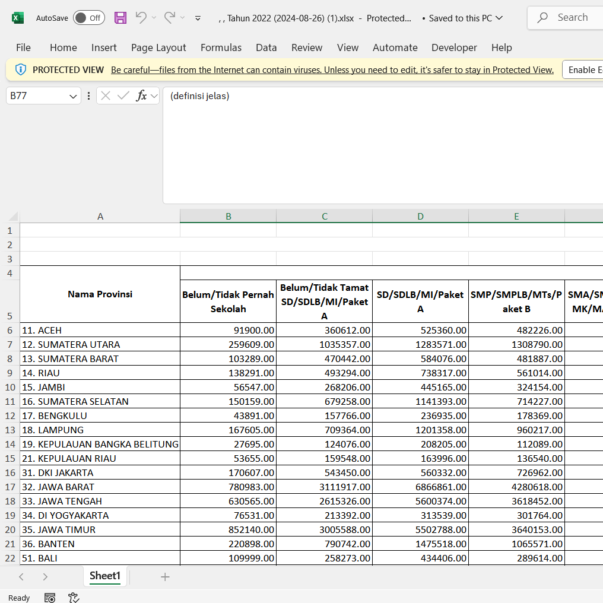

Projects

Barong Rangda Webgame
Barong Rangda is a Bali themed topdown fighting game which features custom made animations and
an interesting gameplay. In this game, you play as Barong, the protector spirit as you attempt
to defeat Rangda through his many incarnations as quickly as possible. Both Barong and Rangda
have special skills, and each level has a unique design.
Carbon Emission Estimation for G20 Countries using MLPr
In this project, I sought to estimate the carbon emission of most G20 nations for the
next 10-20 years using MLP Regression. The machine learning model was trained by data
obtained from a kaggle dataset provided by Ankan Hore. The trained model was then deployed
to Streamlit, and is now available for use.
Employee Attrition Predictor with SVM, Perceptron, and Logistic Regression
Employee Attrition has been growing in companies and organizations globally, including in Indonesia.
This is caused by the emergence of newer technologies, increased globalization and newer business practices,
and poses a serious risk to companies worldwide. Thus, we have created a classifier using SVM, Perceptron and Logistic Regression
to estimate the likelihood of an employee to attrition out based on age, wages, education, et cetera. We obtained the data for to
train this model from kaggle, in a dataset published by IBM.

Excel CSV Data Cleaner
A one-click solution to basic data cleaning for an excel CSV file. Features missing data handling,
duplicate data handling, formatting fixers, and many other basic features.
Data Visualizations on some Indonesian Census Statistics
A project for some basic and intermediate data visualizations for data obtained from Badan Pusat Statistik Indonesia
(BPS). Includes National Census data, Export-Import data, and a few others. Made utilizing the Power Query and DAX
features present in PowerBI for data transformation, and features a paginated style of report.